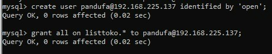

Pada keamanan informasi, kontrol akses merupakan hal yang penting untuk memastikan kerahasiaan, integritas dan ketersediaan (CIA). Mengontrol siapa saja yang dapat mengakses ke sistem dan luasnya akses yang bisa dimiliki oleh pengguna dan sangat penting untuk memastikan dan mengamankan sistem dan data.
Contohnya seperti user root dapat memberikan atau membuat user yang dapat mengakses ke database kepada host yang diizinkan dan hak akses yang diberikan.
Contoh Pemberian Hak Akses Yang Sama seperti user Root Pada pandufa Untuk Mengakses Database.
Pembuattan User Baru
